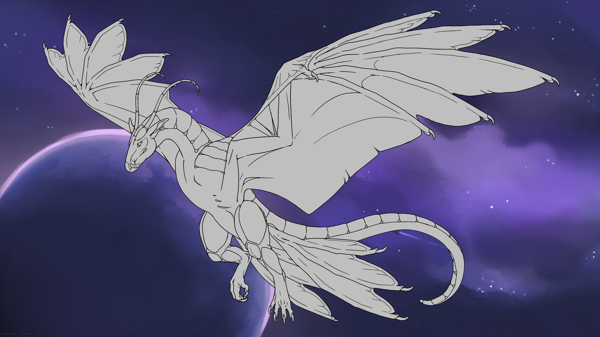

species information
general stats
General Ophern Information
Opherns are highly adaptable, genetically-engineered beings that resemble old earth legends of dragons. They possess two legs and two powerful wings, and are capable of carrying themself and a rider into the sky. Their DNA is highly malleable and designed to react to certain stimuli, enabling rapid mutation based on their environment; they are thus a highly valued partner when it comes to exploration in environments where one cannot depend on steady access to fuel and electricity.
They are sexless and do not possess genders. Opherns hatch from eggs after an incubation period of roughly three months, and reach their full size within six. They have voracious appetites during this period to feed their rapid growth.
The intelligence level of opherns is debated; their creators, the powerful engineers of the Rekene Empire, insist that they are nothing more than intelligent beasts of burden. Some systems have, however, recognised them fully as people. They are capable of telepathically bonding with a favoured companion—usually one who raises them from hatching—whom they may then communicate with using mental images, emotions, and even direct thoughts.
Ophern Breeds
There is currently only one available breed of ophern, though more will become known in time.

general stats
Fey Opherns
The first of the opherns to hatch from the colony ship, the fey are the ‘fighter ships’ of their species, possessing unmatched speed and manoeuvrability.
Fey require a lot of exercise and stimulation to remain happy and healthy; a bored fey will get up to all sorts of mischief to satisfy their mental needs. Regular exploration and scouting missions are recommended to keep them entertained… and avoid them initiating a game of tag with their handler by snatching up valuable equipment.
While fast, the fey are not a robust breed; they lack few natural defences or resistances against extreme temperatures. They tend to do best in warm, wet environs.
Titan Opherns
ERROR: data not found.